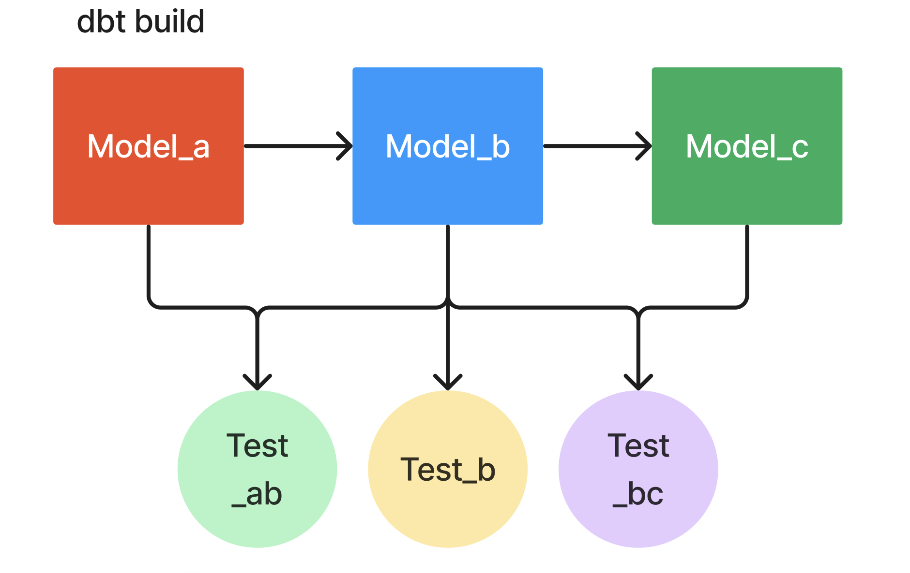

dbt build — one command, in the right orderUntil now you’ve used dbt run to materialize models. Most real projects use a different command for the “I want everything refreshed and verified” workflow: dbt build. It does in one shot what dbt seed && dbt run && dbt test && dbt snapshot does in four — and it does them in DAG order, not in command order.
This exercise replaces a habit (dbt run) with a sturdier one (dbt build).

dbt build actually doesA single dbt build invocation, on a project with seeds + models + tests + snapshots, executes resources in dependency order:
ref()s a seed → built.not_null on customer_id) → run.The key word is interleaved. dbt build doesn’t build all models, then run all tests; it builds a node, runs that node’s tests, and only proceeds downstream if those tests pass. This is why build is the production-grade default — a broken upstream model can’t silently feed a downstream one.
Stage 2 doesn’t have any tests yet — those land in Stage 3. So today, in this project, dbt build is functionally equivalent to dbt run: same nodes, same order, same output. The difference is which command you reach for. Practicing dbt build early means you don’t have a dbt run muscle memory to unlearn the moment tests show up.
dbt build accepts the same selectors as dbt run:
dbt build # everything
dbt build --select fct_orders # this model only
dbt build --select +fct_orders # this model + all upstream
dbt build --select staging # everything in the staging folder
Run it from inside dbt_project/:
dbt build
Today’s output, after Stage 2’s models are in:
1 of 6 OK created sql view model main.stg__customers ...
2 of 6 OK created sql view model main.stg__orders ...
3 of 6 OK created sql view model main.stg__payments ...
4 of 6 OK created sql table model main.int_order_payments ...
5 of 6 OK created sql table model main.fct_orders ...
6 of 6 OK created sql table model main.dim_customers ...
Done. PASS=6 WARN=0 ERROR=0 SKIP=0 TOTAL=6
Six green nodes (three staging views, two mart tables, one intermediate). No tests in this project yet, so the PASS=6 is all model builds.
After tests are added in Stage 3, the output starts to look very different — interleaved model and test lines, and any failing test stops downstream builds. That’s the moment dbt build earns its keep.
run vs build — when to use which| You want… | Command |
|---|---|
| Just rebuild a model while iterating on its SQL | dbt run --select <model> |
| Verify the project end-to-end before merging / shipping | dbt build |
| Rebuild + retest a section of the DAG | dbt build --select +<model> |
| Production scheduled run | dbt build |
The short version: use dbt run for inner-loop iteration, dbt build for any “is the project healthy?” check.
dbt build writesEvery dbt build (and every dbt run) refreshes a few files under dbt_project/target/. The two that matter:
target/manifest.json — the parsed graph. Every node, every config, every dependency. The verifier reads this to check materializations and source declarations. The docs site is built from this.target/run_results.json — what just happened. One entry per node with status (success, error, skipped), elapsed time, the actual SQL that executed. Useful for debugging slow models. The verifier reads this to confirm every node succeeded.You don’t edit these. You don’t commit them. They are dbt’s working memory of the last run.
dbt build from the repo root. dbt commands need a project — cd dbt_project/ first, or set --project-dir.--select and --exclude. dbt build --exclude fct_orders builds everything except the fact, not the fact alone. Inverted from intuition.dbt build --full-refresh for unrelated reasons. That flag forces incremental models to rebuild from scratch. Stage 2 has no incrementals so the flag is harmless here, but it’s an expensive accident in production.Press n to start the exercise.
1. From the repo root, change into the project:
cd dbt_project
2. Run the build:
dbt build
You should see six green lines — three staging views, two intermediate / mart tables, plus dim_customers from Stage 1. Final summary:
Done. PASS=6 WARN=0 ERROR=0 SKIP=0 TOTAL=6
3. Inspect what dbt just recorded:
cat target/run_results.json | python3 -m json.tool | head -30
Look for the top-level "results" array — one entry per node, each with a "status" field. They should all read "success".
ls -la target/manifest.json target/run_results.json
Both files should have an mtime of the last few seconds — proof that this build refreshed them.
4. (Optional sanity check) Try a scoped build, just the path to the fact:
dbt build --select +fct_orders
Same green output, different selector. The + prefix means “this and everything upstream”; dbt build --select fct_orders (no plus) would only rebuild the fact and leave staging alone. Useful when you’re iterating on one part of the DAG.
5. Press v.
dbt build (run by the verifier itself) exits 0.target/run_results.json shows status=success. Any single failed node fails the exercise — and the failure message names which one.| Symptom | Fix |
|---|---|
dbt: command not found |
Activate the venv: source .venv/bin/activate. Then dbt --version should show the duckdb plugin. |
Could not find profile named 'dbt_project' |
You’re not running from inside dbt_project/. dbt looks for profiles.yml in the current directory by default. |
One model errored — Compilation Error somewhere |
A previous Stage 2 exercise’s file isn’t in place. The error message names the missing dependency; go back and finish that exercise. |
PASS=0 WARN=0 ERROR=0 SKIP=0 TOTAL=0 |
dbt didn’t find anything to build. Check that models/ has files in it and dbt_project.yml lists model-paths: ["models"]. |
Press n. Last exercise of Stage 2 — generate the dbt docs site and skim the lineage view of everything you’ve built.